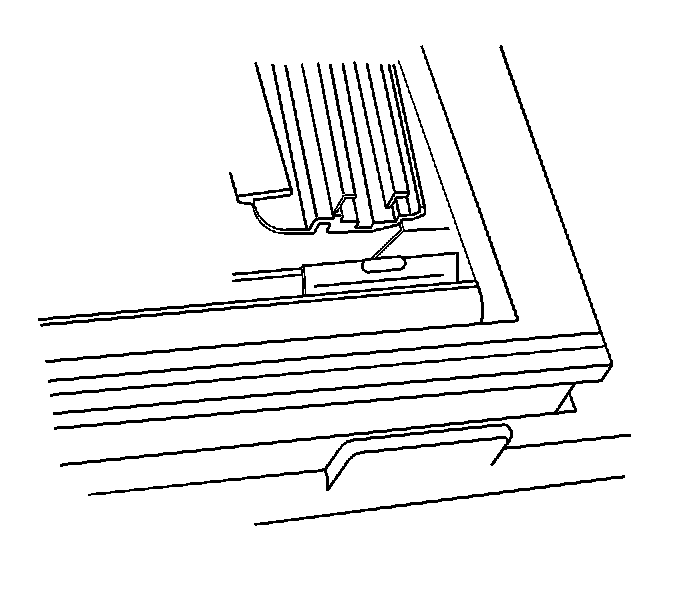

Sunroof Window Front Track Assembly Replacement
Sunroof Window Front Track Assembly Replacement
Removal Procedure
1. Open the sunroof completely.
2. It is only necessary to lower the headliner. Only do those step in headliner replacement that will lower the headliner enough to gain access to the part. Refer to Headlining Trim Panel Replacement (Service and Repair) .
3. Remove the center window panel. Refer to Sunroof Window Replacement (Front) (Service and Repair)Sunroof Window Replacement (Rear Vent) (Service and Repair)Sunroof Window Replacement (Center) (Service and Repair)Sunroof Window Replacement (Rear Stationary) (Service and Repair) .

4. Remove the front window motor (4) from the motor/actuator compartment. Refer to Sunroof Motor/Actuator Replacement (Sunroof Motor/Actuator Replacement) .
5. Remove the front sunshade motor/actuator (2). Refer to Sunroof Motor/Actuator Replacement (Sunroof Motor/Actuator Replacement) .

6. Remove the front sunshade assembly (2). Refer to Sunroof Sunshade Assembly Replacement (Rear) (Sunroof Sunshade Assembly Replacement (Rear))Sunroof Sunshade Assembly Replacement (Front) (Sunroof Sunshade Assembly Replacement (Front)) .
7. Remove the 2 screws from the front track extensions.
8. Remove the underside track to frame screws.

9. Disengage the front track from the sunroof motor/actuator compartment drive tube blocks (2).
10. Lower the track assembly into the vehicle.
11. Pull the drive cable from the drive tube front window cam assembly at the green end.
12. Remove the track from the vehicle.

13. Remove the front cam (2) from the track (3).

14. Pull the cam/cable assembly (1) from the inner front track (2).
Installation Procedure

1. Position the trolley cable assembly (3) to the front track assembly (2).

2. Install the window guide cables (5) with the green ends and the sunshade cable (3) to the drive cable tubes (1) at the front inner edge of the sunroof motor/actuator compartment.
3. Push the cables evenly to the full rearward position within the track.
4. Guide the cables into the sunroof motor/actuator assembly drive tube.

5. Install the front track cam (4) to the front track (1). Lock the front cam (2) to the front track assembly.

6. Install the retainer assembly (2) to the driver tubes (1, 5).
7. Secure the bottom half of the retainer to the track (3).
8. Position the front track assembly to the underside of the sunroof frame.
9. Ensure that the tracks are parallel.
10. Loosely install the track screws.

11. Do not install the 2 rear sunshade assembly screws (2). The screws will be installed when the sunshade assembly is installed.
Notice: Refer to Fastener Notice (Fastener Notice) .
12. Ensure that the tracks are parallel.
* Tighten the center 5 screws to 9 N.m (44 lb in).
* Tighten the front 5 screws to 9 N.m (44 lb in).

13. Ensure that the sunshade barrels are slid rearward to the sunshade open position.

14. Install the front sunshade (1) assembly. Refer to Sunroof Sunshade Assembly Replacement (Rear) (Sunroof Sunshade Assembly Replacement (Rear))Sunroof Sunshade Assembly Replacement (Front) (Sunroof Sunshade Assembly Replacement (Front)) .
15. Install the front and center windows. Refer to Sunroof Window Replacement (Front) (Service and Repair)Sunroof Window Replacement (Rear Vent) (Service and Repair)Sunroof Window Replacement (Center) (Service and Repair)Sunroof Window Replacement (Rear Stationary) (Service and Repair) .
16. Install the headliner. Refer to Headlining Trim Panel Replacement (Service and Repair) .
17. Reposition the front and rear trim lace to the headliners.
18. Perform the Front Window/Sunshade Initialization Process. Refer to Sunroof Front Window/Sunshade Initialization Process (Sunroof Front Window/Sunshade Initialization Process) .